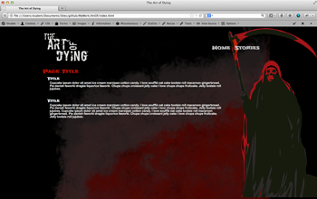
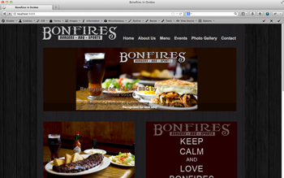
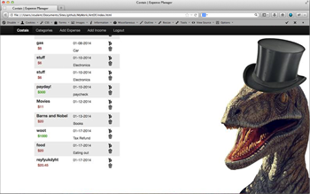
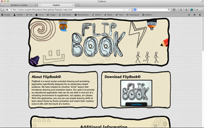
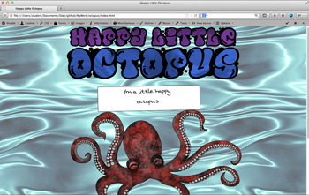
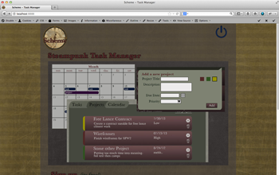

Websites
Art of Dying
Blog like collection of stories
Bonfires
Client work for Bonfires in Ovideo
Costais
Expense manager made with CodeIgniter
Flipbook
Elementary bases flash application for flipbook like animations
Happy Little Octopus
Personal graphic project intergrated into the web for Javascript practice
Task Manager
Steampunk task manager made with jQuery